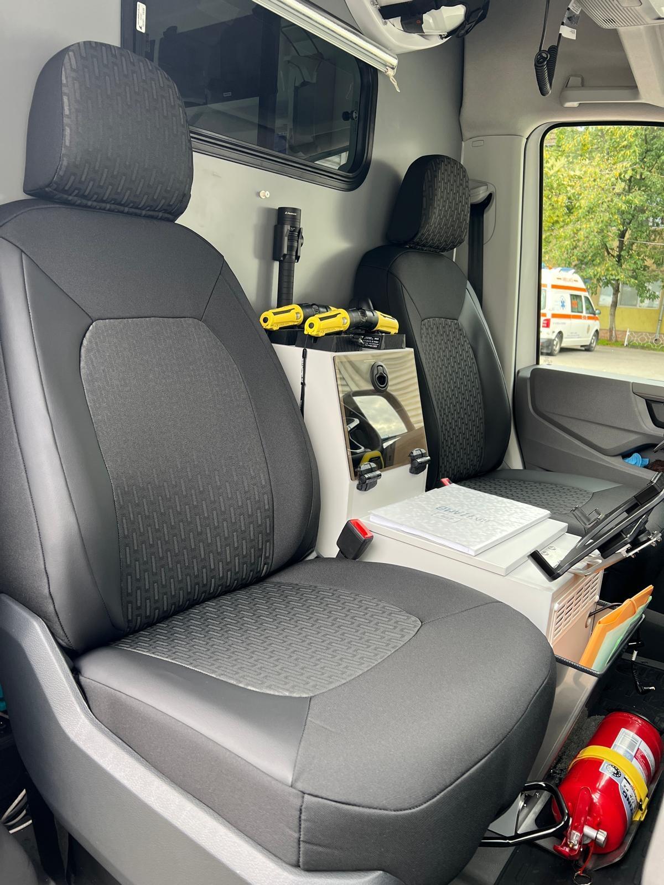

Atelier de croitorie pentru huse auto personalizate pe mărci, modele și nivele de echipare
Huse premium realizate exclusiv la comandă
Cu o experiență bogată în colaborarea cu diverse reprezentanțe auto (Skoda, VW, Toyota, Ford, Dacia, Renault, Nissan, KGM, Suzuki etc.), Vinero transformă interiorul mașinii tale într-un spațiu de lux și confort. Nu suntem un magazin de huse universale; suntem un atelier dedicat preciziei.
Fiecare proiect începe cu o consultație privată unde analizăm specificațiile mașinii și alegem împreună materialele din mostrarul nostru. Această abordare personalizată garantează un grad înalt de potrivire cu interiorul mașinii dumneavoastră, oferind protecție de lungă durată și un aspect estetic.
La Vinero, nu vindem huse de serie. Creăm interioare unice, adaptate perfect mașinii și stilului tău, urmând următorii pași:
Stabilim o întâlnire pentru a evalua mașina. Îți prezentăm mostrele noastre de materiale și culori pentru a alege combinația optimă pentru autovehiculul clientului.
Lucrăm cu o gamă vastă de texturi și culori, materialele folosite fiind specifice industriei auto.
Fiecare husă este realizată cu precizie și montată de noi în Timișoara și la punctul de lucru de la Simeria - jud. Hunedoara pentru a asigura un aspect similar cu tapițeria originală.